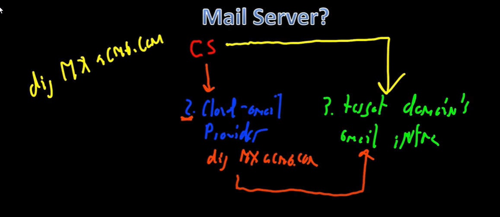

Link to video portion on mail server
spear phish page (the whole point of this)
Do not send message local smtp server
instead lookup the mail exchange record
> dig mx.targetnet.com
Have cobalt strike connect to it directly to relay phish
this has the same effect as connecting to a local mail server
